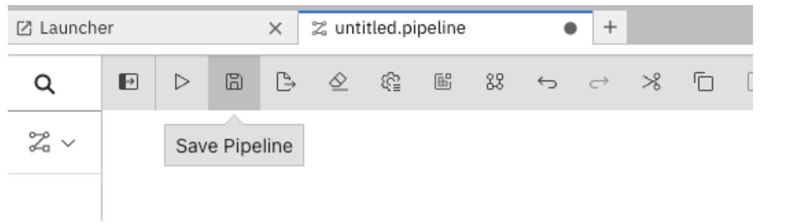

Solution Pattern: Name Template
Workshop
1. Installing the workshop environment
1.1. Installing the environment
Login to https://demo.redhat.com/catalog and create an OpenShift cluster with RHOAI and enable Open environment using either this one or this link.
2. Delivering the workshop
-
Login to the bastion host as well using the ssh terminal and configure your oc cli with credentials from OpenShift Cluster.
-
Fork “main” branch from this repo.
-
Clone the above forked repo into bastion host and cd to this repo and cd to deployment-yaml.
-
Run setup.sh file. This file will create the following things:
-
Project
-
Secrets required for Minio
-
Minio
-
Pipeline Server
-
-
This step will take 1 to 2 minutes. Go to project stock-predict in the RHOAI dashboard under “Data Science Projects”. Once you see “Import pipeline” in the “Pipelines” section in the stock-predict project, this step is complete.
-
Now create a workbench with the name “stock-predict-workbench” with following details under the “Workbenches” section. Use the “Standard Data Science” image from the “Image selection” drop down menu and select “Use existing data connection”. From this dropdown menu, select “Minio Connection”.

-
Workbench creation may take 2 mins, once it is running state click on Open link.
-
Click on “Allow selected permissions” as shown in the below screenshot. If it asks for login credentials, use the details.
-
You will see this page after opening the workbench.
-
Fork this repo under your github user.
-
Now clone the above forked git repo into this workbench using the steps mentioned in the screenshot and cd to notebooks folder.
-
Now let us create a pipeline. In our pipeline, we have one stage only. There can be multiple stages in the pipeline. From the Launcher, click on the “Pipeline Editor” under Elyra.
-
From stockcheck-code/notebooks, drag and drop the notebook “create_model.ipynb” onto the pipeline editor you just created.
-
Right click on the box, and click on “Open Properties”.
-
Under “NODE PROPERTIES”, select Runtime Image value: Python 3.9 (UBI9).
-
Click on “Browse” under File Dependencies and select “requirements.txt” as shown in the below screenshot. This file contains the python packages name, which will be installed.

-
Under Additional Properties, add an Environment variable named “TICKER”. You can use either of the values: IBM or AAPL or MSFT. Make sure to remember this value.
-
Click on the “Save pipeline” button as shown below.
 -
Now run the pipeline by clicking on “Run Pipeline” button.
-
If it prompts you to save the changes, click on Save. Next it will ask you for the Pipeline Name, enter: “run1” and click “OK”.
-
Once the job is submitted successfully, you will see this message. Please take a note of this path in object storage.
-
Now we will see the output/result from the above run in MINIO console. Let us get the MINIO console url using this cli command.
oc get route -n stock-predict | grep minio -
Copy this url and open it from any browser and use the credentials from minio-root-user secret in the stock-predict project from OpenShift console.
-
Now go to the specific folder mentioned in the Job run details under Object Browser as shown below. Click on the html page and download it. Open this file in the browser to see the run of the pipeline output. If you don’t see the file yet, wait for 2 to 3 mins for the pipeline to finish.

-
This pipeline saves the model named forecast.onnx in the Models bucket.
-
Now the model has been generated and saved in a MINIO s3 bucket as shown above. We will be deploying this model using this cli command from deployment-yaml folder on bastion host:
oc apply -k model-server -
In a few minutes our model will be deployed in RHOAI and will be accessible via a url. Copy this url as we will be needing it.

-
Now we will be deploying a flask application which will consume this URL and will make the Stock price trend forecast.
-
Fork this repo under your github user.
-
Now using the developer role in OpenShift console, deploy this application using Import from Git under stock-predict project.
-
Use Dockerfile strategy and put . in the Dockerfile path.
-
Use Target port as 5000
-
Next click on Deployment as shown in the above screenshot and add an environment variable: MODEL_URL and its value will come from RHOAI model url. Once done, click on “Create”.
-
Build will run and it will generate a container image and then deployment will create a pod using the image. This pod will be exposed through a route and service. This process will take 2 to 3 mins.
-
Now get the route for the flask app and access the url in a browser. Flask app UI will look like this:
-
Since we entered TICKER environment value as AAPL(apple stock) in the pipeline we ran. From First drop down select AAPL. From the second drop down select 6 months or 1 year of past duration as per your choice. Now click on “Generate forecast”. This will show us the forecast of Stock price trend in the graph.